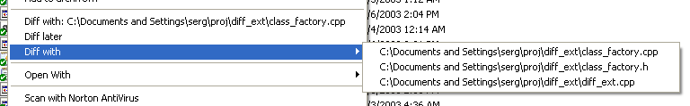

works with Win2K pro, WinXP
Why? I use Windows explorer as my main file manager. From time to time I need to see what is thedifference between two files. There are many graphical diff programs available. Like tkdiff, csdiff, Araxis merge etc. Unfortunately these tools does not give one ability to compare files from Explorer or (in case of Araxis) does not allow to compare files from different directories. So, I wrote a very simple extension to Explorer's context menu.
diff_ext make it possible to compare 2 files in the same directory or "save" a file for later comparison.
This program is distributed in the hope that it will be useful, but WITHOUT ANY WARRANTY; without even the implied warranty of MERCHANTABILITY or FITNESS FOR A PARTICULAR PURPOSE.
Latest sources are: diff_ext-1.3.1.zip
Latest binaries: diff_ext-1.3.1.exe